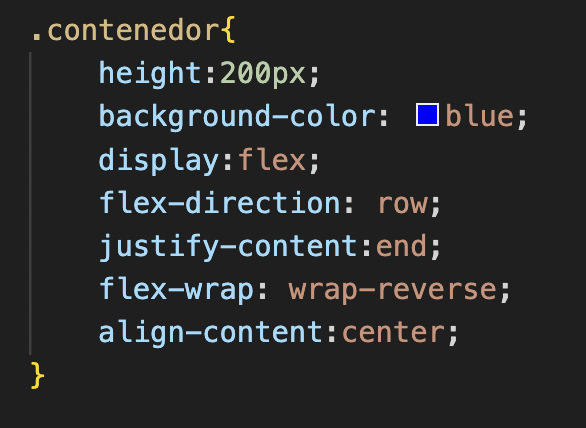
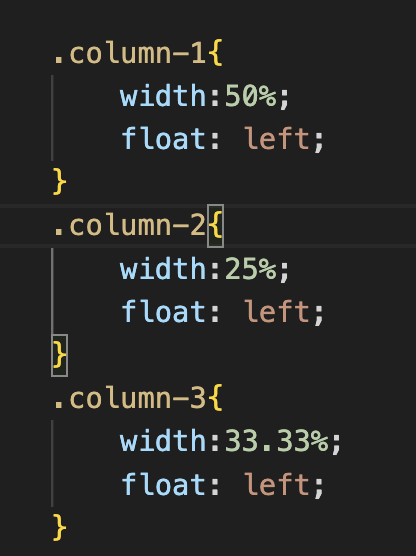

GitHub es un lugar en línea donde las personas pueden almacenar y compartir su código de programación. Funciona como una plataforma colaborativa que utiliza el sistema de control de versiones Git, permitiendo a los desarrolladores trabajar juntos en proyectos y realizar un seguimiento de los cambios en el código de manera eficiente.
Markdown utiliza asteriscos o guiones bajos para dar formato al texto en negrita o cursiva. Puedes replicar esto en HTML usando las etiquetas <strong> para negrita y <em> para cursiva.
Las listas en Markdown se crean utilizando asteriscos, guiones o números. En HTML, puedes usar las etiquetas <ul> para listas no ordenadas y <ol> para listas ordenadas.
Los enlaces en Markdown se crean con corchetes y paréntesis, y las imágenes con un signo de exclamación antes del enlace. En HTML, puedes usar las etiquetas <a> e <img> respectivamente.

Markdown utiliza almohadillas (#) para encabezados <h1> a <h6>.
Puedes agregar líneas horizontales utilizando tres guiones (-), tres asteriscos (*), o tres guiones bajos (_).
Markdown permite citas con el uso del símbolo mayor que (>). Puedes emular esto en HTML utilizando la etiqueta <blockquote>
Un documento HTML comienza con la etiqueta <!DOCTYPE html> que define el tipo de documento y sigue con las etiquetas <html>, <head> y <body>
Utiliza las etiquetas <h1> a <h6> para encabezados y <p> para párrafos
Crea listas ordenadas (<ol>) y no ordenadas (<ul>) con las etiquetas <li>
Usa <a> para enlaces y <img> para imágenes.
Define la estructura de la tabla utilizando <table>:
| Encabezado 1 | Encabezado 2 |
|---|---|
| Fila 1, Celda 1 | Fila 1, Celda 2 |
| Fila 2, Celda 1 | Fila 2, Celda 2 |
Font Awesome es una biblioteca de iconos vectoriales que se pueden personalizar y utilizar fácilmente en tu página web.
1. Agrega el enlace al archivo de estilos de Font Awesome en la sección <head> de tu HTML.

2. Utiliza las clases de Font Awesome para agregar iconos a tus elementos HTML.
<p><i class="fas fa-home"></i> Inicio</p>
<p><i class="fas fa-envelope"></i> Correo electrónico</p>
<p><i class="fas fa-phone"></i> Teléfono</p>
Elemento completado
Favorito
Me gusta
Puedes encontrar más iconos y personalizaciones en la página oficial de Font Awesome.

Estructura, comentarios, agrupar selectores, tipos de selectores, selectores avanzados, composición.
Una hoja de estilos es un conjunto de reglas que definen la estética final de los documentos (X)HTML que la usan. Cada regla está formada por un selector y un conjunto de declaraciones.
Un selector nos sirve para definir a qué elemento o elementos queremos aplicar las declaraciones de la regla. Las declaraciones son las diversas características que han de cumplir los elementos que concuerdan con el selector. A cada propiedad de cada declaración le ponemos el valor que sea necesario.
Selector de clase. Corresponde con todos los elementos que tengan el atributo class con el valor especificado. Por ejemplo, el selector:
Selectores universales. Sirven para seleccionar todos los elementos de la página. En el ejemplo, todos los elementos han de tener un borde sólido negro de un píxel:
Selectores de hijos. Para seleccionar elementos concretos que son hijos DIRECTOS de otros elementos concretos. Por ejemplo, esta regla pone de color azul el texto de los elementos <strong> que son hijos de <h3> pero no el resto de elementos <strong>
Selectores de descendientes.S Similar al selector de hijos pero, a diferencia de ellos, que solo seleccionan elementos descendientes DIRECTOS, los selectores de descendientes seleccionan los elementos pertinentes EN CUALQUIER PUNTO de la jerarquía del elemento.
display:flex permite que los elementos hijos dentro del contenedor flex se ajusten automáticamente para llenar el espacio disponible en el contenedor, proporcionando un diseño más flexible y dinámico.
La propiedad float se ha utilizado históricamente para crear diseños de columnas, especialmente antes de la popularización de Flexbox y Grid. Por ejemplo, se podían flotar elementos div a la izquierda o derecha para crear una estructura de columnas.
float puede volverse problemático en dispositivos pequeños y pantallas estrechas, ya que no maneja naturalmente el redimensionamiento y reordenamiento de elementos que se espera en un diseño responsive.